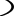
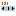

SDS Widgets
Die folgende Liste enthält alle Widgets, die in SDS verfügbar sind. Wie auf den
Main Pages von SDS beschrieben, sind alle Eigenschaften eines ausgewählten Widgets
in der 'property view' sichtbar. Jede Eigenschaft kann mit einer Prozess-Variablen
verbunden werden (s. Abschnitt ‘dynamisation of properties’).
Eine ausführliche Widget-Beschreibung steht im Dokument 'Synoptic Display Studio Widgets' auf
CSS Homepage.
SDS Widget list
Simple Widgets
 Arc: Arc (Bogen) mit einem Winkel von 0° bis 360°.
 Ellipse: Ellipse mit einer horizontalen oder vertikalen Grenzlinie,
um z.B. ein Niveau darzustellen.
Ellipse: Ellipse mit einer horizontalen oder vertikalen Grenzlinie,
um z.B. ein Niveau darzustellen.
 Image: Ein Image, welches sich im Workspace befindet.
Die Formate bmp, jpg and gif sind möglich.
Image: Ein Image, welches sich im Workspace befindet.
Die Formate bmp, jpg and gif sind möglich.
 Label: Textfeld mit wählbarem Font und Fontgrösse.
Label: Textfeld mit wählbarem Font und Fontgrösse.
 Polygon: Eine Figur, die nur aus Geraden aufgebaut ist. Beenden der Erzeugung einer Figur mit Doppelklick.
Polygon: Eine Figur, die nur aus Geraden aufgebaut ist. Beenden der Erzeugung einer Figur mit Doppelklick.
 Polyline: Folge von Geraden. Beenden der Erzeugung einer Figur mit Doppelklick.
Polyline: Folge von Geraden. Beenden der Erzeugung einer Figur mit Doppelklick.
 Rectangle: Rechteck mit einer vertikalen oder horizontalen Grenzlinie, um z.B. ein Niveau darzustellen.
Rectangle: Rechteck mit einer vertikalen oder horizontalen Grenzlinie, um z.B. ein Niveau darzustellen.
Complex Widgets
 Bargraph: Zeigt den Wert einer Prozessvariablen in einem Bargraphen, mit Alarmschwellen.
Bargraph: Zeigt den Wert einer Prozessvariablen in einem Bargraphen, mit Alarmschwellen.
 Switch: Sammlung von Symbolen zur Darstellung von Schalterwerten..
Switch: Sammlung von Symbolen zur Darstellung von Schalterwerten..
 Waveform: Überwacht den Wert einer Prozessvariablen in einem Graphen.
Waveform: Überwacht den Wert einer Prozessvariablen in einem Graphen.
Action Widgets
Advanced Slider:
Stellt einen Wert dar und erlaubt dem Benutzter, den Wert innerhalb eines geg. Bereichs zu ändern.
Man beachte, dass der Advanced Slider für Benutzung mit einem Wertebereich von 0 bis 100 gebaut ist.
Er funktioniert nicht richtig, wenn man sehr grosse Werte und/oder sehr kleine Schrittweiten eingibt.
 Action Button:
Action Button:
 Menu Button:
Menu Button:
 Simple Slider:
Setzt einen Wert innerhalb eines Wertebereichs.
Man beachte, dass der Slider für Benutzung mit einem Wertebereich von 0 bis 100 gebaut ist.
Er funktioniert nicht richtig, wenn man sehr grosse Werte und/oder sehr kleine Schrittweiten eingibt.
 Text Input:
Text Input:
Other Widgets
 Grouping Container:
Grouping Container:
 Linking Container:
Linking Container:
 Timer:
Timer: